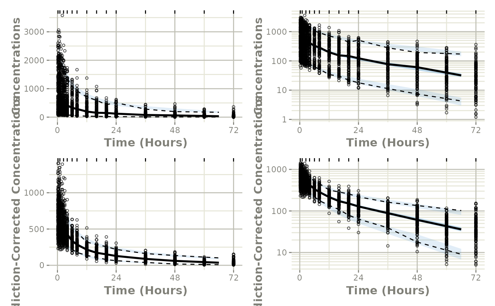

This shows an easy work-flow to create a VPC using a NONMEM model:
Step 1: Convert the NONMEM model to
rxode2:
library(babelmixr2)
library(nonmem2rx)
# First we need the location of the nonmem control stream Since we are running an example, we will use one of the built-in examples in `nonmem2rx`
ctlFile <- system.file("mods/cpt/runODE032.ctl", package="nonmem2rx")
# You can use a control stream or other file. With the development
# version of `babelmixr2`, you can simply point to the listing file
mod <- nonmem2rx(ctlFile, lst=".res", save=FALSE)
#> ℹ getting information from '/home/runner/work/_temp/Library/nonmem2rx/mods/cpt/runODE032.ctl'
#> ℹ reading in xml file
#> ℹ done
#> ℹ reading in ext file
#> ℹ done
#> ℹ reading in phi file
#> ℹ done
#> ℹ reading in lst file
#> ℹ abbreviated list parsing
#> ℹ done
#> ℹ reading in grd file
#> ℹ done
#> ℹ splitting control stream by records
#> ℹ done
#> ℹ Processing record $INPUT
#> ℹ Processing record $MODEL
#> ℹ Processing record $gTHETA
#> ℹ Processing record $OMEGA
#> ℹ Processing record $SIGMA
#> ℹ Processing record $PROBLEM
#> ℹ Processing record $DATA
#> ℹ Processing record $SUBROUTINES
#> ℹ Processing record $PK
#> ℹ Processing record $DES
#> ℹ Processing record $ERROR
#> ℹ Processing record $ESTIMATION
#> ℹ Ignore record $ESTIMATION
#> ℹ Processing record $COVARIANCE
#> ℹ Ignore record $COVARIANCE
#> ℹ Processing record $TABLE
#> ℹ change initial estimate of `theta1` to `1.37034036528946`
#> ℹ change initial estimate of `theta2` to `4.19814911033061`
#> ℹ change initial estimate of `theta3` to `1.38003493562413`
#> ℹ change initial estimate of `theta4` to `3.87657341967489`
#> ℹ change initial estimate of `theta5` to `0.196446108190896`
#> ℹ change initial estimate of `eta1` to `0.101251418415006`
#> ℹ change initial estimate of `eta2` to `0.0993872449483344`
#> ℹ change initial estimate of `eta3` to `0.101302674763154`
#> ℹ change initial estimate of `eta4` to `0.0730497519364148`
#> ℹ read in nonmem input data (for model validation): /home/runner/work/_temp/Library/nonmem2rx/mods/cpt/Bolus_2CPT.csv
#> ℹ ignoring lines that begin with a letter (IGNORE=@)'
#> ℹ applying names specified by $INPUT
#> ℹ subsetting accept/ignore filters code: .data[-which((.data$SD == 0)),]
#> ℹ renaming 'ytype' to 'nmytype'
#> ℹ done
#> ℹ read in nonmem IPRED data (for model validation): /home/runner/work/_temp/Library/nonmem2rx/mods/cpt/runODE032.csv
#> ℹ done
#> ℹ changing most variables to lower case
#> ℹ done
#> ℹ replace theta names
#> ℹ done
#> ℹ replace eta names
#> ℹ done (no labels)
#> ℹ renaming compartments
#> ℹ done
#> ℹ solving ipred problem
#> ℹ done
#> ℹ solving pred problem
#> ℹ doneStep 2: convert the rxode2 model to
nlmixr2
In this step, you convert the model to nlmixr2 by
as.nlmixr2(mod); You may need to do a little manual work to get the residual
specification to match between nlmixr2 and NONMEM.
Once the residual specification is compatible with a nlmixr2 object,
you can convert the model, mod, to a nlmixr2 fit
object:
fit <- as.nlmixr2(mod)
#> → loading into symengine environment...
#> → pruning branches (`if`/`else`) of full model...
#> ✔ done
#> → finding duplicate expressions in EBE model...
#> [====|====|====|====|====|====|====|====|====|====] 0:00:00
#> → optimizing duplicate expressions in EBE model...
#> [====|====|====|====|====|====|====|====|====|====] 0:00:00
#> → compiling EBE model...
#> ✔ done
#> rxode2 4.1.0.9000 using 2 threads (see ?getRxThreads)
#> no cache: create with `rxCreateCache()`
#> → Calculating residuals/tables
#> ✔ done
#> → compress origData in nlmixr2 object, save 203816
#> → compress parHistData in nlmixr2 object, save 2184
fitStep 3: Perform the VPC
From here we simply use vpcPlot() in conjunction with
the vpc package to get the regular and prediction-corrected
VPCs and arrange them on a single plot:
library(ggplot2)
p1 <- vpcPlot(fit, show=list(obs_dv=TRUE))
#> using C compiler: ‘gcc (Ubuntu 13.3.0-6ubuntu2~24.04) 13.3.0’
#> [====|====|====|====|====|====|====|====|====|====] 0:00:00
#> Warning: Using `size` aesthetic for lines was deprecated in ggplot2 3.4.0.
#> ℹ Please use `linewidth` instead.
#> ℹ The deprecated feature was likely used in the vpc package.
#> Please report the issue to the authors.
#> This warning is displayed once every 8 hours.
#> Call `lifecycle::last_lifecycle_warnings()` to see where this warning was
#> generated.
p1 <- p1 + ylab("Concentrations") +
rxode2::rxTheme() +
xlab("Time (hr)") +
xgxr::xgx_scale_x_time_units("hour", "hour")
p1a <- p1 + xgxr::xgx_scale_y_log10()
## A prediction-corrected VPC
p2 <- vpcPlot(fit, pred_corr = TRUE, show=list(obs_dv=TRUE))
#> [====|====|====|====|====|====|====|====|====|====] 0:00:00
p2 <- p2 + ylab("Prediction-Corrected Concentrations") +
rxode2::rxTheme() +
xlab("Time (hr)") +
xgxr::xgx_scale_x_time_units("hour", "hour")
p2a <- p2 + xgxr::xgx_scale_y_log10()
library(patchwork)
(p1 * p1a) / (p2 * p2a)